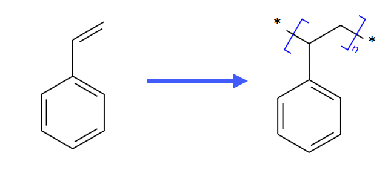
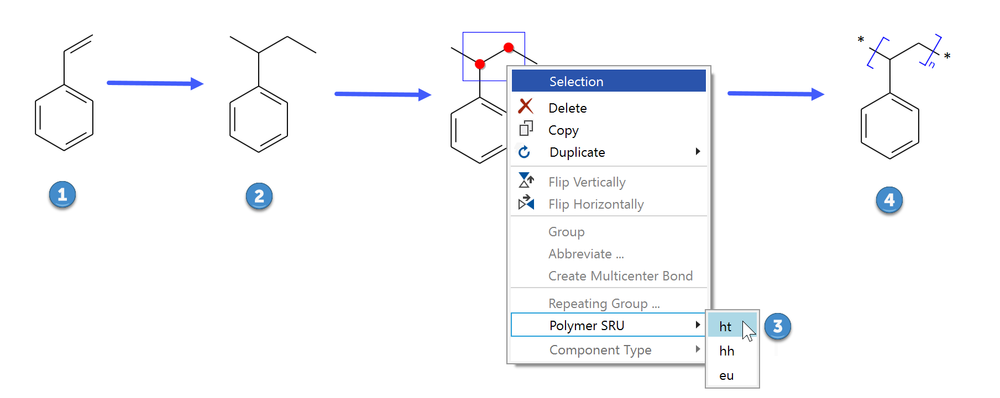

Polymers
Summary
This topic demonstrates how to specify a polymer.A polymer consists of repeating chemical fragments.Other than in repeating groups, the exact repeat count generally is unknown here. The right part of the screen shot blow shows the common polymer notation: The fragment within the square brackets represents the repeated unit in the final polymer, the 'n' suffix on the bracket symbolizes the unknown count, and the two (virtual) 'star' atoms represent the attachment points of the repeating fragment to its neighbors in the polymer backbone.

Step by Step
Best start by drawing the monomer structure (1). Then add the two bonds symbolizing the connection it to its neighbors in the final polymer, and adjust the bond orders where necessary (2) - the final star atom symbols will be assigned by the application in the next step. Then drag the selection rectangle over the atoms which are repeated in the polymer backbone to select them. Finally right-click the selection rectangle to open its context menu (3).

Click Polymer SRU in the context menu and select one of the possible connection modes: ht (head-to-tail; default), hh (head-head) or eu (either or unknown). This will draw the polymer notation brackets (4); the default 'ht' symbol is not explicitly drawn on the brackets.
To specify a copolymer, each participant can be drawn separately as individual polymer; then group them and specify the desired copolymer component type.